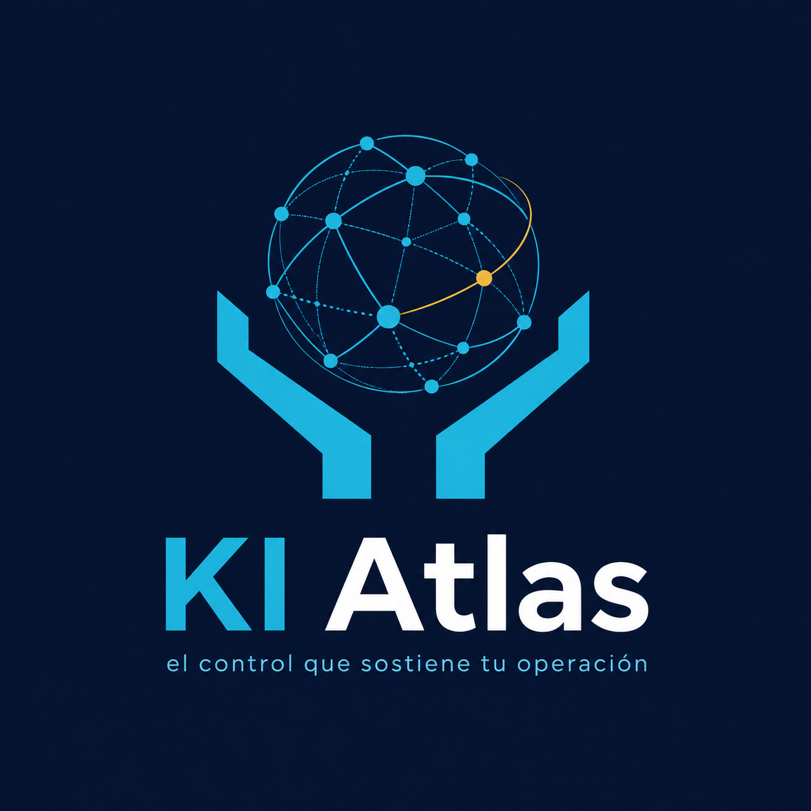

⌁
Soporte TI
Atención remota y presencial para resolver incidencias sin detener tu jornada.
Tecnología clara, segura y ordenada para empresas que necesitan avanzar sin que sus equipos, datos o procesos se conviertan en un problema.

No se trata solo de arreglar computadores. Se trata de dar orden, seguimiento y protección a lo que permite que tu empresa funcione.
Atención remota y presencial para resolver incidencias sin detener tu jornada.
Controla equipos, responsables, ubicaciones, movimientos e historial técnico.
Revisión de accesos, respaldo, riesgos y prácticas que cuidan tus datos.
Apoyo en conectividad, correo, infraestructura y operación diaria.
Páginas web, automatizaciones e integraciones para trabajar mejor.
Tickets e historial para que cada solicitud tenga seguimiento y respuesta.
Cada caso se atiende con un proceso claro. Así la tecnología deja de depender de urgencias y empieza a funcionar con continuidad.
Entendemos el contexto, la urgencia y el impacto real.
Evaluamos el problema antes de intervenir.
Aplicamos una solución clara y comunicada.
El trabajo queda documentado y trazable.
Transformamos incidencias en mejoras futuras.
Tu empresa no debería preguntarse dónde están sus equipos, quién tiene acceso o qué pasó con una incidencia importante.
Cuéntanos qué necesitas. Revisamos tu situación y te proponemos una alternativa clara, realista y acorde a tu operación.
Escribir por WhatsApp →